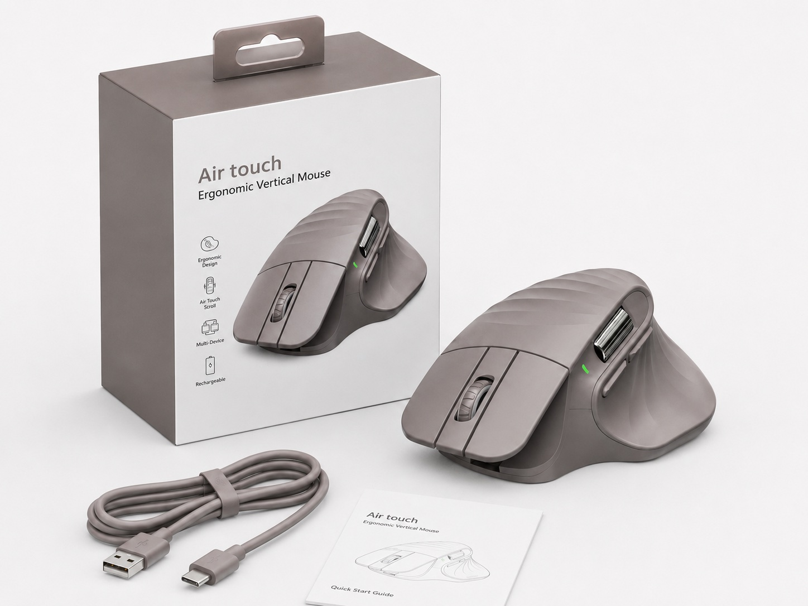
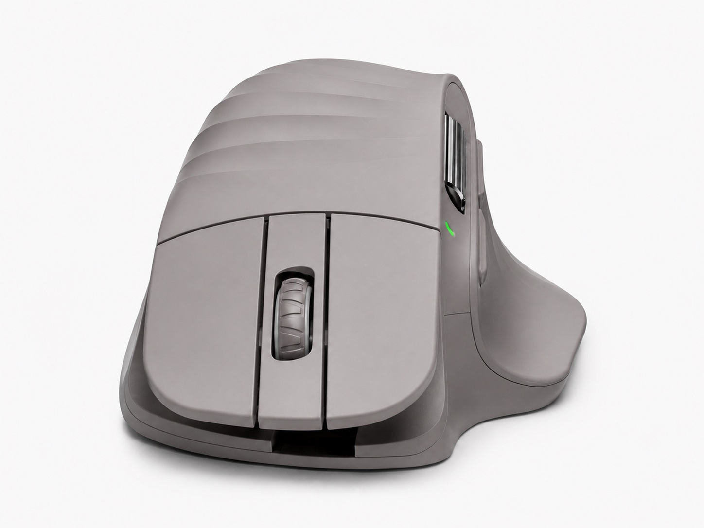
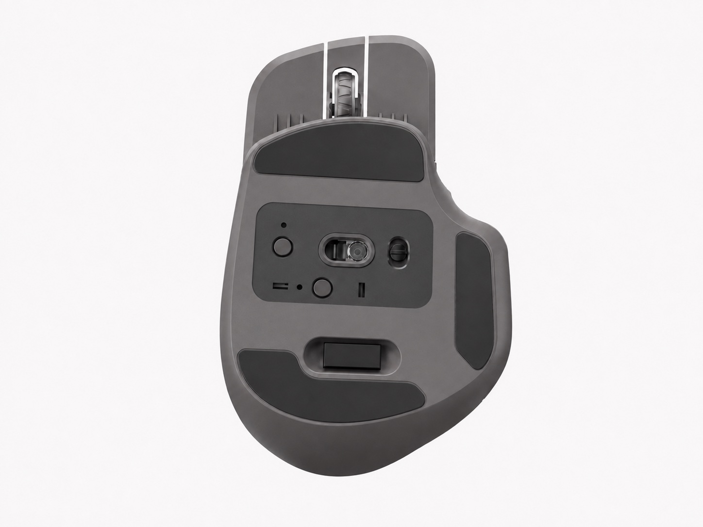
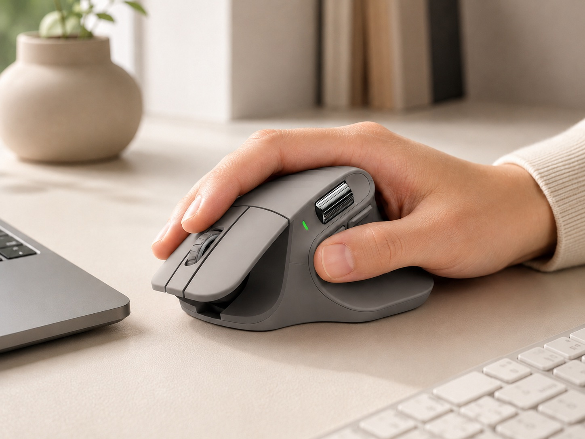
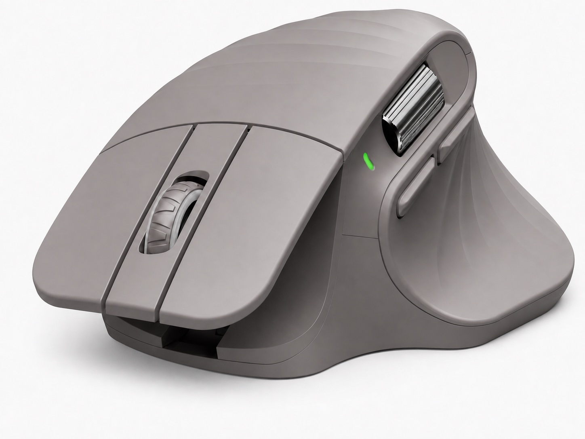
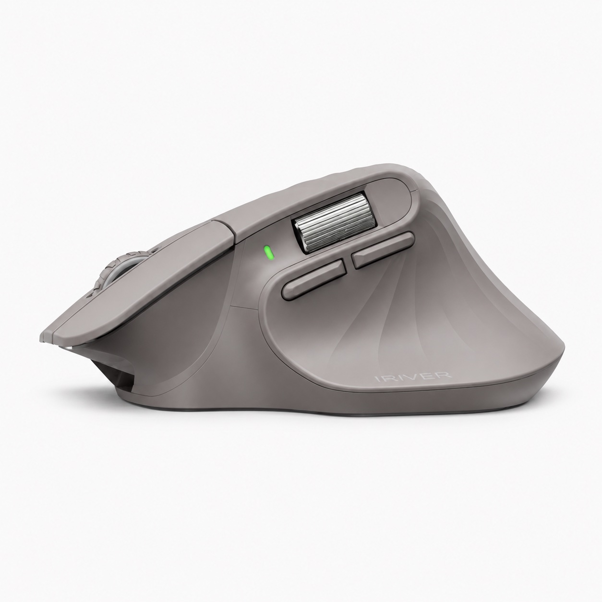
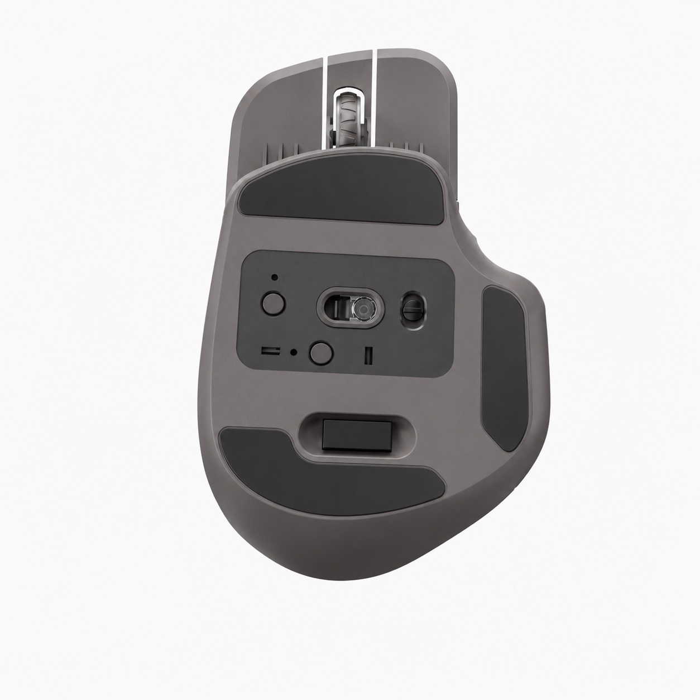

Underside control layout
Use this view to check visible bottom controls, skates and compartment direction before approving the sample version.

Air Touch vertical mouse
BH-703 Air Touch is a vertical ergonomic mouse direction for buyers reviewing comfort-oriented desktop accessories. The supplied image set shows the grey shell, side scroll area, underside controls, retail-style package, USB-A to USB-C cable and quick-start guide for sample discussion.

Product summary
Use this page as a visual and RFQ preparation reference. Product specifications should be confirmed against the selected physical sample before public listing copy, packaging artwork or quotation.
Confirmed and to-confirm
The new images are useful for appearance, accessory and packaging review. Technical values from the older PPT should stay as to-confirm items until the selected sample version is checked.
| Wording | Air touch and Ergonomic Vertical Mouse appear on the supplied package and guide image. |
|---|---|
| Shell | Grey vertical ergonomic shape with raised thumb-side support and sculpted top surface. |
| Controls | Main click buttons, scroll wheel, side buttons, side scroll area, underside controls and skates are shown. |
| Package | Retail-style box, USB-A to USB-C cable and quick-start guide are shown in the package reference image. |
| PPT list | The existing PPT reference lists PAW3104 sensor, 500 mAh battery, 2.4G + BT1 + BT2 connection, 8 buttons and 1200 / 2400 / 3200 / 4000 DPI. Confirm the selected sample version before using these as public claims. |
| RFQ | Ask for the exact sample version, color direction, receiver or cable set, charging route, logo area, package copy and destination-market document questions. |
Product image evidence
These images give importers and private-label buyers a cleaner way to discuss appearance, handling direction, accessory set and package layout before sample approval.
Use this view to check visible bottom controls, skates and compartment direction before approving the sample version.

Review the raised vertical shell, main buttons, wheel position and side control area for ergonomic product positioning.
The image shows box direction, a USB-A to USB-C cable and quick-start guide. Confirm final accessory set before quotation.

Use the clean underside image to compare sample finish, bottom layout and visible assembly details.

Use this scene to discuss office, productivity and ergonomic desktop positioning without adding unconfirmed performance claims.

Review the wheel, side scroll area and side buttons, then confirm control behavior on the physical sample.

Use this side profile to compare the vertical angle, thumb support shape and visible logo or branding area.

Keep this duplicate angle as a backup visual for bottom-layout confirmation and sample discussion.
Sample checklist
Confirm whether the selected version uses 2.4G, Bluetooth, dual-mode or another route, and whether a receiver is included.
Confirm charging port, cable type, battery route, manual language and the exact accessory set for the sample.
Check button count, wheel feel, side scroll behavior, DPI switching and software behavior on the physical sample.
Review logo area, grey or alternate color direction, retail box wording, icons, barcode area and buyer-market document questions.
Related pages
FAQ
BH-703 Air Touch is a vertical ergonomic mouse reference shown with supplied product images, a package reference, a USB-A to USB-C cable and a quick-start guide image for sample discussion.
The images show a grey vertical shell, main buttons, a scroll wheel, side buttons, a side scroll area, underside skates and controls, retail-style packaging, a cable and a quick-start guide.
Confirm the exact sample version, connection mode, receiver or cable setup, charging route, battery, DPI, sensor, button count, logo area, packaging copy and accessory set before public listing copy or quotation.
No. Public pricing and MOQ are not published because quotation details depend on selected version, project scope, quantity range, branding, packaging and destination market.
Share the target market, sales channel, preferred connection route, sample timing, color direction, branding needs and packaging questions.